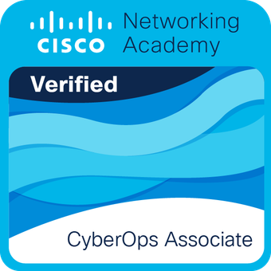

Mickaël Maillot
Administrateur d'Infrastructures Sécurisées
Diplômé d'une licence professionnelle AIS, mon parcours est marqué par l'obtention de certifications Cisco clés (CCNA 1, 2, 3 et CyberOps Associate) ainsi que d'une solide expérience opérationnelle au sein de l'École de Gendarmerie de Tulle.
Fort de ce socle technique robuste, je souhaite désormais contribuer activement à la sécurisation et à l'optimisation des infrastructures de votre entreprise, tout en garantissant un maintien en condition opérationnelle rigoureux.
Mon Parcours
- 2019 Bac STI2D
- 2021 DUT MMI
- 2021 Cerrinov Group
- 2023 LDLC Group
- 2024 - 2025 Licence AIS
- 2025 Gendarmerie
- Aujourd'hui Recherche
Baccalauréat STI2D SIN | Lycée Technique — Mention Bien
Systèmes d'Information et Numérique. Formation axée sur le développement de solutions logicielles et la conception de prototypes. Initiation aux bases des réseaux informatiques, à l'administration système et à la logique algorithmique, permettant une maîtrise opérationnelle de la transmission et du traitement de l'information.
DUT MMI | IUT de Corrèze
Socle technique transverse axé sur le développement Web et les réseaux informatiques. Compétences : conception d'applications, gestion de projets numériques, administration système, design, montage vidéo et déploiement de services Web interactifs.
Stage Rémunéré | Cerrinov Group
Développement de solutions numériques : production vidéo, SEO et design d’interface (Figma). Expérience concrète dans la gestion des attentes clients et la conduite de projets techniques, notamment la migration de site web entre deux CMS, assurant la montée en compétence technique et opérationnelle.
Expérience Professionnelle | LDLC Group
Maintenance matérielle et support technique : Assemblage, diagnostic et réparation de parcs informatiques. Gestion du Helpdesk, incluant le support de proximité aux utilisateurs et la résolution proactive d'incidents.
Licence Professionnelle AIS | IUT du Limousin
Formation spécialisée dans le déploiement et la sécurisation des infrastructures serveurs. Le cursus couvre l'administration et la supervision des réseaux d'entreprise, la virtualisation, ainsi que la mise en place de stratégies de sauvegarde et de cybersécurité.
Expérience Professionnelle | École de Gendarmerie de Tulle
Maintenance, sécurisation et évolution des infrastructures IT. Responsable du maintien en conditions opérationnelles du réseau interne et du parc informatique, tout en assurant un support technique de proximité auprès des utilisateurs dans un environnement exigeant et sécurisé.
À la recherche d'un défi permanent | Administrateur Systèmes & Réseaux
Diplômé et immédiatement disponible dans un rayon de 30 km autour de Brive-la-Gaillarde (incluant Saint-Pantaléon-de-Larche et Terrasson-Lavilledieu). Prêt à mobiliser mes compétences opérationnelles et mes certifications Cisco (CCNA, CyberOps) au service de la performance et de la résilience de vos infrastructures.
Compétences Techniques
Infrastructures & Virtualisation
Configuration réseau, virtualisation d'environnements et automatisation des déploiements.
Administration SI & Accès
Gestion des accès et des permissions via la méthode AGDLP, maintien en condition opérationnelle.
Surveillance & Supervision
Supervision active du réseau et analyse centralisée des logs de sécurité.
Sécurité & Audit
Détection proactive de vulnérabilités, scans de ports avancés et analyse de flux réseau.
Environnement Technique
Savoir-Être
Rigueur & Organisation
Application stricte des procédures opérationnelles et rédaction de documentations techniques claires.
Confidentialité & Discrétion
Sens aigu de l'intégrité, acquis et éprouvé lors de missions de confiance.
Analyse & Remédiation
Capacité de diagnostic rapide face aux incidents système ou réseau afin d'appliquer les correctifs appropriés.
Adaptabilité
Curiosité technique naturelle facilitant l'apprentissage rapide de nouveaux outils.
Mes Certifications
Validations officielles de mes compétences en réseaux et cybersécurité délivrées par Cisco.

CCNA 1
Introduction to Networks

CCNA 2
Switching, Routing & Wireless

CCNA 3
Networking, Security & Automation

CyberOps
CyberOps Associate